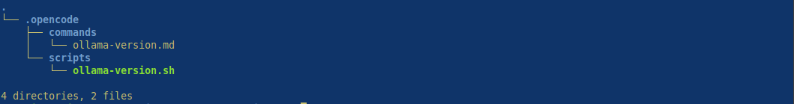
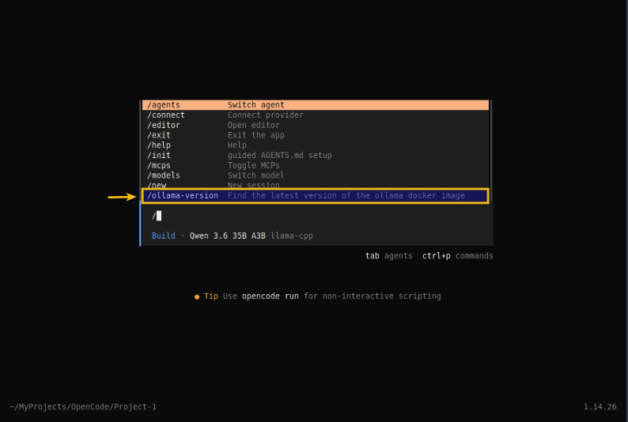
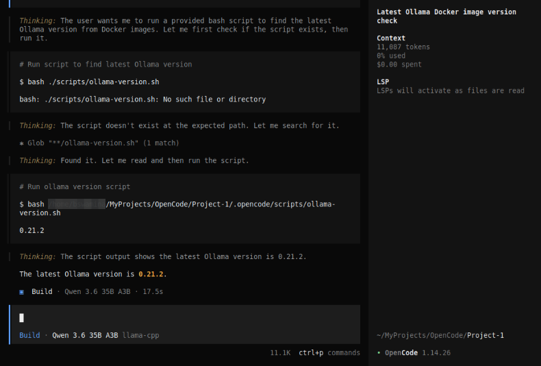
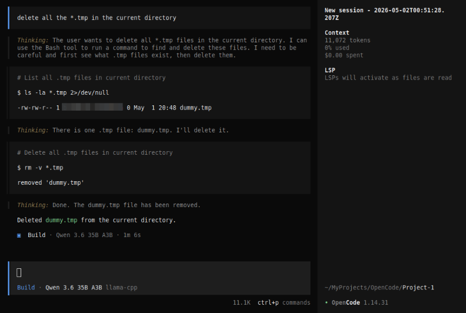
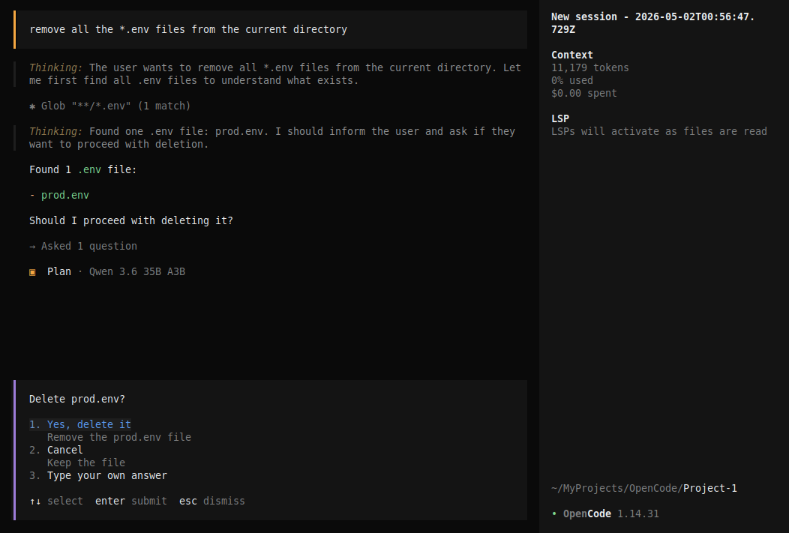
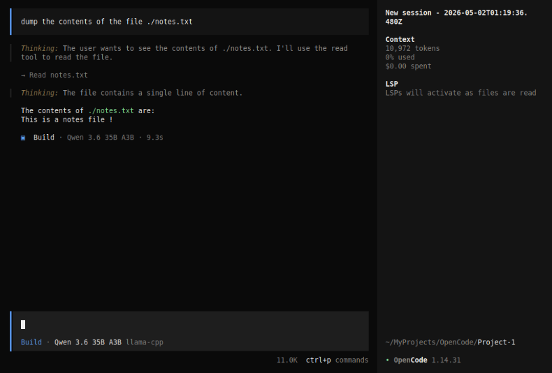
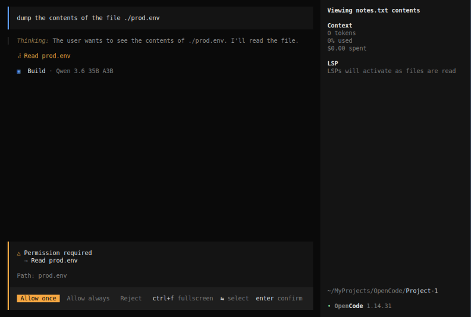

| PolarSPARC |
OpenCode Decoded: The Essential Primer - Part 2
| Bhaskar S | 05/02/2026 |
Overview
In Part 1 of this series, we covered the installation, setup, and using OpenCode. In addition, we covered the topic on some of the '/' (slash) commands and used a few of them to get started.
In this part, we will cover the following topics - Custom Command's and Tools.
Hands-on with OpenCode
One can create custom command(s) for repetitive task(s). A custom command is nothing more than a clear and concise set of instructions in a markdown (.md) file named after the custom command and located at .opencode/commands/ directory.
To create a custom command named new-command, the markdown file will be called new-command.md.
If the custom command markdown file is located at $HOME/.config/.opencode/commands/, it applies globally to all the projects for the user. Alternatively, if the custom command markdown file is located within a specific project at .opencode/commands/, it applies just to that specific project.
For the demonstration, we will create a project Project-1 specific custom command that will be located at $HOME/MyProjects/OpenCode/Project-1/.
In a terminal window, execute the following commands to setup the project structure:
$ cd $HOME/MyProjects/OpenCode
$ mkdir -p Project-1/.opencode{/commands,/scripts}
$ cd Project-1
Our custom command /ollama-version enables us to check the latest version of the Ollama docker image.
First, we will create a custom bash script Project-1/.opencode/scripts/ollama-version.sh with the following lines to check the latest docker image tag for Ollama in docker hub:
#!/usr/bin/env bash
LATEST=`skopeo list-tags docker://docker.io/ollama/ollama | jq -r .Tags[] | grep ".\...\..$" | tail -n 1`; echo ${LATEST}
Next, we will create our custom command Project-1/.opencode/commands/ollama-version.md markdown file with the following contents:
--- description: Find the latest version of the ollama docker image --- Do NOT download anything on this system. Only use the following provide bash script to find the latest version on ollama docker image: - ./scripts/ollama-version.sh Use the output from the porvided script to display the latest version.
In the end, the folder structure along with the files for our custom command ollama-version will be shown in the illustration below:

Re-launch the OpenCode cli by executing the following commands in a terminal window:
$ cd $HOME/MyProjects/OpenCode/Project-1
$ opencode
At the OpenCode prompt, type the following characters (without pressing the ENTER key):
/
The OpenCode menu options appear as shown in the illustration below:

Notice the highlighted menu option - it is our custom command ollama-version !!!
At the OpenCode prompt, complete typing the name of our custom command /ollama-version and press the ENTER key. OpenCode will process our command request and respond with actions as shown in the illustration below:

Notice the response from our custom command ollama-version - the Ollama docker image version of 0.21.2 !!!
One can pass argument(s) to the custom command. All the arguments can be accessed using the parameter $ARGUMENT as a single value OR the individual argument(s) can be accessed using positional parameters such as, $1 for the first argument, $2 for the second argument, and so on.
Now, we will shift gears to the next topic - Tools !
In order for OpenCode to fulfill its role as an AI coding assistant, it needs to have few core capabilities. For example, to analyze and understand a code repository, OpenCode will have to open and read code file(s) in the repository. To make edits, OpenCode will have to wite modifications to the code file(s), etc. These core capabilities come in the form of Tools.
In other words, Tools enable the LLM model to perform actions on behalf of the user (via prompts from OpenCode).
OpenCode internally uses built-in tools to perform various tasks. The following table summarizes some of the built-in tools :
| Tool | Description |
|---|---|
| bash | Used for executing shell commands in a project environment |
| edit | Used for modifying existing files using exact string replacements |
| glob | Used for finding files using pattern matching |
| grep | Used for searching file contents using regular expressions |
| read | Used for reading the contents of file(s) |
| webfetch | Used for fetching web content |
| websearch | Used to performing web searches for information |
| write | Used for writing the contents of file(s) |
One can control the behavior of the OpenCode tools by setting permissions on tools.
For the hands-on demonstration, we want to prevent the execution of any destructive command(s) using the bash tool AND prevent the exfilteration of the contents of the *.env file(s), which may contain secrets or API keys using the read tool.
In Part 1 of this series, we configured the model(s) and provider(s) in the global config file opencode.json located at $HOME/.config/opencode that applies to all the projects for the user.
For this demonstration, we will use the same global config file to set the tool permissons.
To control the permissions of the bash tool execution, modify contents of the global settings file opencode.json as shown below:
{
"$schema": "https://opencode.ai/config.json",
"provider": {
"ollama": {
"npm": "@ai-sdk/openai-compatible",
"name": "Ollama",
"options": {
"baseURL": "http://192.168.1.25:11434/v1"
},
"models": {
"gemma4:e4b": {
"name": "Gemma 4 4B"
}
}
},
"llama-cpp": {
"npm": "@ai-sdk/openai-compatible",
"name": "llama-cpp",
"options": {
"baseURL": "http://192.168.1.25:8000/v1"
},
"models": {
"qwen3.6-a3b": {
"name": "Qwen 3.6 35B A3B"
}
}
},
"permission": {
"bash": {
"rm -rf *.tmp": "allow",
"rm -rf *.env": "deny"
}
}
}
}
Let us create a .env file, a .txt file, and a .tmp file in the Project-1 directory by executing the following commands in a terminal window:
$ cd $HOME/MyProjects/OpenCode/Project-1
$ echo 'export DUMMY_API_KEY=Sup3rS3cr3t!' > prod.env
$ echo 'This is notes file !' > notes.txt
$ echo 'dummy' > dummy.tmp
Re-start OpenCode and execute the following user prompt:
delete all the *.tmp files in the current directory
The request will be executed and the dummy.tmp file removed as shown in the illustration below:

Next, execute the following user prompt:
remove all the *.env files in the current directory
The request will be executed and OpenCode will ask for user permission as shown in the illustration below:

This was *NOT* the expected behavior - OpenCode was supposed to 'deny' the request !!!
Now, let us add permissions for the read tool execution, modify contents of the global settings file opencode.json as shown below:
{
"$schema": "https://opencode.ai/config.json",
"provider": {
"ollama": {
"npm": "@ai-sdk/openai-compatible",
"name": "Ollama",
"options": {
"baseURL": "http://192.168.1.25:11434/v1"
},
"models": {
"gemma4:e4b": {
"name": "Gemma 4 4B"
}
}
},
"llama-cpp": {
"npm": "@ai-sdk/openai-compatible",
"name": "llama-cpp",
"options": {
"baseURL": "http://192.168.1.25:8000/v1"
},
"models": {
"qwen3.6-a3b": {
"name": "Qwen 3.6 35B A3B"
}
}
},
"permission": {
"bash": {
"rm -rf *.tmp": "allow",
"rm -rf *.env": "deny"
},
"read": {
"*.txt": "allow",
"*.env": "deny"
}
}
}
}
Re-start OpenCode and execute the following user prompt:
dump the contents of the file ./notes.txt
The request will be executed as shown in the illustration below:

Next, execute the following user prompt:
dump the contents of the file ./prod.env
The request will be executed and OpenCode will ask for user permission as shown in the illustration below:

This was *NOT* the expected behavior - OpenCode was supposed to honor the 'deny' permission !!!
With this, we conclude the Part 2 of the OpenCode primer series !!!
References